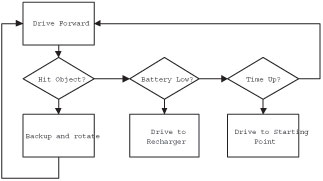
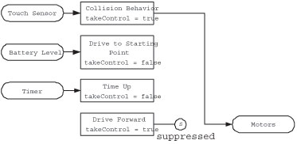

|
|
Start of Tutorial |
When most people start programming a robot, they think of the program flow as a series of if-thens, which is remeniscent of structured programming (Figure 1). This type of programming is very easy to get started in and hardly requires any thought of design beforehand. A programmer can just sit at the computer and start typing. The problem is, the code ends up as spaghetti code; all tangled up and difficult to expand. The behavior control model, in contrast, requires a little more planning before coding begins, but the payoff is that each behavior is nicely encapsulated within an easy to understand structure. This will theoretically make your code easier to understand by other programmers familiar with the behavior control model, but more importantly it becomes very easy to add or remove specific behaviors from the overall structure, without negative reprecussions to the rest of the code. Let's examine how to do this in leJOS.
The Behavior API is very simple, and is composed of only one interface and one class. The Behavior interface is used to define behaviors. The Behavior interface is very general, so it works quite well because the individual implementations of a behavior vary widely. Once all the Behaviors are defined, they are given to an Arbitrator to regulate which behaviors should be activated. All classes and interfaces for Behavior control are located the josx.robotics package. The API for the Behavior interface is as follows.
Returns a boolean value to indicate if this behavior should become active. For example, if a touch sensor indicates the robot has bumped into an object, this method should return true.
The code in this method initiates an action when the behavior becomes active. For example, if takeControl() detects the robot has collided with an object, the action() code could make the robot back up and turn away from the object.
The code in the suppress() method should immediately terminate the code running in the action() method. The suppress() method can also be used to update any data before this behavior completes.
As you can see, the three methods in the Behavior interface are quite simple. If a robot has three discreet behaviors, then the programmer will need to create three classes, with each class implementing the Behavior interface. Once these classes are complete, the code should hand the Behavior objects off to the Arbitrator to deal with.
Creates an Arbitrator object that regulates when each of the behaviors will become active. The higher the index array number for a Behavior, the higher the priority level.
Starts the arbitration system.
The Arbitrator class is even easier to understand than Behavior. When an Arbitrator object is instantiated, it is given an array of Behavior objects. Once it has these, the start() method is called and it begins arbitrating; deciding which behaviors should become active. The Arbitrator calls the takeControl() method on each Behavior object, starting with the object with the highest index number in the array. It works its way through each of the behavior objects until it encounters a behavior that wants to take control. When it encounters one, it executes the action() method of that behavior once and only once. If two behaviors both want to take control, then only the higher level behavior will be allowed (Figure 2).
Now that we are familiar with the Behavior API under leJOS, let's look at a simple example using three behaviors. For this example, we will program some behavior for a simple robot with differential steering. This robot will drive forward as it's primary low-level behavior. When it hits an object, a high priority behavior will become active to back the robot up and turn it 90 degrees. There will also be a third behavior which we will insert into the program after the first two have been completed. Let's start with the first behavior.
As we saw in the Behavior interface, we must implement the methods action(), suppress(), and takeControl(). The behavior for driving forward will take place in the action() method. It simply needs to make motors A and C rotate forward:
public void action() {
Motor.A.forward();
Motor.C.forward();
}
That was easy enough! Now the suppress() method will need to stop this action when it is called, as follows:
public void suppress() {
Motor.A.stop();
Motor.C.stop();
}
So far, so good. Now we need to implement a method to tell Arbitrator when this Behavior should become active. As we outlined earlier, this robot will drive forward always, unless something else suppresses it, so this Behavior should always want to take control (it's a bit of a control freak). The takeControl() method should return true, no matter what is happening. This may seem counter intuitive, but rest assured that higher level behaviors will be able to cut in on this behavior when the need arises. The method appears as follows:
public boolean takeControl() {
return true;
}
That's all it takes to define our first Behavior to drive the robot forward. The complete code listing for this class is as follows:
import josx.robotics.*;
import josx.platform.rcx.*;
public class DriveForward implements Behavior {
public boolean takeControl() {
return true;
}
public void suppress() {
Motor.A.stop();
Motor.C.stop();
}
public void action() {
Motor.A.forward();
Motor.C.forward();
}
}
The second behavior is a little more complicated than the first, but still very similar. The main action of this behavior is to reverse and turn when the robot strikes an object. In this example, we would like the behavior to take control only when the touch sensor strikes an object, so the takeControl() method will be defined as follows:
public boolean takeControl() {
return Sensor.S2.readBooleanValue();
}
For the action, we want the robot to back up and rotate when it strikes an object, so we will define the action() method as follows:
public void action() {
// Back up:
Motor.A.backward();
Motor.C.backward();
try{Thread.sleep(1000);}catch(Exception e) {}
// Rotate by causing one wheel to stop:
Motor.A.stop();
try{Thread.sleep(300);}catch(Exception e) {}
Motor.C.stop();
}
Defining the suppress() method for this behavior is quite easy in this example. The action() method above is the sort of method that runs very quickly (1.3 seconds) and is usually high priority. We can either stop it dead by stopping motor movement, or we could wait for it to complete the backing up maneuver. To keep things simple, lets just stop the motors from rotating:
public void suppress() {
Motor.A.stop();
Motor.C.stop();
}
The complete listing for this behavior is as follows:
import josx.robotics.*;
import josx.platform.rcx.*;
public class HitWall implements Behavior {
public boolean takeControl() {
return Sensor.S2.readBooleanValue();
}
public void suppress() {
Motor.A.stop();
Motor.C.stop();
}
public void action() {
// Back up:
Motor.A.backward();
Motor.C.backward();
try{Thread.sleep(1000);}catch(Exception e) {}
// Rotate by causing only one wheel to stop:
Motor.A.stop();
try{Thread.sleep(300);}catch(Exception e) {}
Motor.C.stop();
}
}
We now have our two behaviors defined, and it's a simple matter to make a class with a main() method to get things started. All we need to do is create an array of our Behavior objects, and instantiate and start the Arbitrator as shown in the following code listing:
import josx.robotics.*;
public class BumperCar {
public static void main(String [] args) {
Behavior b1 = new DriveForward();
Behavior b2 = new HitWall();
Behavior [] bArray = {b1, b2};
Arbitrator arby = new Arbitrator(bArray);
arby.start();
}
}
The above code is fairly easy to understand. The first two lines in the main() method create instances of our Behaviors. The third line places them into an array, with the lowest priority behavior taking the lowest array index. The fourth line creates the Arbitrator, and the fifth line starts the Arbitration process. When this program is started the robot will scurry forwards until it bangs into an object, then it will retreat, rotate, and continue with its forward movement until the power is shut off.
This seems like a lot of extra work for two simple behaviors, but now let's see how easy it is to insert a third behavior without altering any code in the other classes. This is the part that makes behavior control systems very appealing for robotics programming. Our third behavior could be just about anything. We'll have this new behavior monitor the battery level and play a tune when it dips below a certain level. Examine the completed Behavior:
import josx.robotics.*;
import josx.platform.rcx.*;
public class BatteryLow implements Behavior {
private float LOW_LEVEL;
private static final short [] note = {
2349,115, 0,5, 1760,165, 0,35, 1760,28, 0,13, 1976,23,
0,18, 1760,18, 0,23, 1568,15, 0,25, 1480,103, 0,18,
1175,180, 0,20, 1760,18, 0,23, 1976,20, 0,20, 1760,15,
0,25, 1568,15, 0,25, 2217,98, 0,23, 1760,88, 0,33, 1760,
75, 0,5, 1760,20, 0,20, 1760,20, 0,20, 1976,18, 0,23,
1760,18, 0,23, 2217,225, 0,15, 2217,218};
public BatteryLow(float volts) {
LOW_LEVEL = volts;
}
public boolean takeControl() {
float voltLevel = (ROM.getBatteryPower() * 10 / 355);
int displayNum = (int)(voltLevel * 100);
LCD.setNumber(0x301f, displayNum, 0x3004);
LCD.refresh();
return voltLevel < LOW_LEVEL;
}
public void suppress() {
// Nothing to suppress
}
public void action() {
play();
try{Thread.sleep(3000);}catch(Exception e) {}
System.exit(0);
}
public static void play() {
for(int i=0;i<note.length; i+=2) {
final short w = note[i+1];
Sound.playTone(note[i], w);
try {
Thread.sleep(w*10);
} catch (InterruptedException e) {}
}
}
}
The complete tune is stored in the note array at line 6 and the method to play the notes is at line 30. This behavior will take control only if the current battery level is less the voltage specified in the constructor. The takeControl() method looks a little inflated, and that's because it also displays the battery charge to the LCD display. The action() and suppress() methods are comparatively easy. Action makes a bunch of noise, then exits the program as soon as it is called. Since this behavior stops the program, there is no need to create a suppress() method.
To insert this Behavior into our scheme is a trivial task. We simply alter the code of our main class as follows:
Note: The voltage level of the RCX at rest is different from the voltage when in action. The voltage level at rest might be 7.8 V, but when motors are activated they naturally cause a drop in the voltage reading. Make sure the voltage threshold used in the BatteryLow constructor is low enough.
This example beautifully demonstrates the real benefit of behavior control coding. Inserting a new behavior, no matter what the rest of the code looks like, is simple. The reason for this is grounded in object oriented design; each behavior is a self contained, independant object.
TIP: When creating a behavior control system, it is best to program each behavior one at a time and test them individually. If you code all the behaviors and then upload them all at once to the RCX brick, there is a good chance a bug will exist somewhere in the behaviors, making it difficult to locate. By programming and testing them one at a time it makes it easier to identify where the problem was introduced.
Behavior coding is predominantly used for autonomous robots - robots that work independantly, on their own free will. A robot arm controlled by a human would likely not use behavior programming, although it would be possible. For example, a robot arm with four joystick movements could have a behavior for each direction of movement. But as you may recall, behaviors are ordered with the highest order taking precedence over lower order behaviors. Who is to say that pushing left on the joystick would take precedence over pushing up? In other words, behavior control in anything other than autonomous robots is largely overkill.
It would be nice if all behaviors were as simple as the examples given above, but in more complex coding there are some unexpected results that can sometimes be introduced. Threads, for example, can sometimes be difficult to halt from the suppress() method, which can lead to two different threads fighting over the same resources - often the same motor! Another problem that can potentially occur in multi-threaded programs is that events go undetected, such as touch sensor hits. These are a few of the pitfalls we will be examining in this section. Let's start by looking at what is generally the least complicated of the three Behavior methods to implement; the takeControl() method.
Note: The behavior control API used by leJOS is a modified version of the model proposed by Rodney Brooks. His model is all done at the lowest level possible - the motors. This prevents higher level classes from being used in behaviors. For example, the Navigator class accesses the motors of the RCX directly, so with the original behavior control model Navigator could not be used. Also, if both motors are moving forward, and a higher level behavior takes command it is not clear if all lower level motor movements should be stopped. What if the higher level behavior only uses one of the motors? Should the other keep moving forward? And will this lead to odd behavior? These are the problems the leJOS Behavior Control API tries to address.
It is important for takeControl() methods to be responsive in behavior control systems. When a bumper collides with an object, the robot must stop or reverse direction immediately, otherwise it will continue to move forward into the object. Sometimes when an event occurs, such as a touch sensor press, the program misses the event because the RCX is executing another thread. By the time it gets to the takeControl() method the sensor has been released and the program misses its opportunity to activate the proper behavior action. In this section we will learn how to make fool-proof takeControl() methods.
In the above example we used single indicators of whether or not to take control. For example, it took one reading from the Sensor class to check if the touch sensor was hit. The takeControl() method can also make a decision to take control based on a number of different values. It could initiate an action if it is facing east, the light reading is greater than 60, and the temperature is less than 20 degrees:
public boolean takeControl() {
boolean pass = false;
if(direction == EAST)
if(Sensor.S1.readValue() > 60)
if(Sensor.S2.readValue() < 20)
pass = true;
return pass;
}
Likewise, a different behavior could just as easily check on the same data, only react differently based on different values. For example, another Behavior could initiate a different action if the robot is facing west, the light reading is less than 60, and temperature is greater than 20 degrees. So a robot can initiate an unlimited number of responses with only a few sensors at its disposal. This leads to another point about implementing the takeControl() method.
With the Arbitrator cycling through all the takeControl() methods, there could be a significant delay in checking a condition, such as whether a touch sensor has been tapped. It's a feature of the imperfect world we live in that, when the robot strikes an object, the touch sensor may not remain pressed. It sometimes bounces off the object into a position where the bumper is no longer pressing on the touch sensor. You may have noticed in the example that it relies on checking touch very often. What if the touch sensor is momentarily activated, but the Arbitrator misses this fact? The solution is to use a SensorListener, and have it set a flag to indicate the event has occurred. Let's take the HitWall Behavior from the example above and modify it so it uses a SensorListener:
<>import josx.robotics.*;The above code implements a SensorListener, and hence implements the stateChanged() method. It is important to add the sensor listener to Sensor.S2, as shown in line 10. Notice the stateChanged() method does not simply return the value of the bumper Sensor; rather, if the Sensor value is true then it changes the hasCollided variable to true. If, on the next pass, the sensor value is false then hasCollided will remain true until takeControl() has seen the hasCollided value. Once takeControl() sees there has been a collision, then hasCollided is reset back to false (line 20). With this new code, it should be impossible for the robot to miss any collisions with the bumper!
In order to code functional action() and suppress() pairs, it is necessary to understand how arbitration works. Arbitrator cycles through each of its Behaviors, checking the takeControl() method to see if the action() for the Behavior should be executed. It starts with the highest priotiry method and goes down to the lowest priority Behavior. As soon as it comes across a behavior that wants to take control, it executes suppress() for the previous Behavior (assuming it is not a higher level thread), then runs the action() method for the current Behavior. As soon as the action() method returns, it then starts looping again, checking each behavior. If the takeControl() from the previous Behavior continues to say true, it does not run action() again. This is important; a single Behavior can not be executed twice in a row. If it could, it would constantly be suppressing itself. If Arbitrator moves on to another Behavior, when that behavior completes then it will call action on the lower level behavior again.
Note: If you would like to remove any mystery about what goes on in the Arbitrator class, take a look at the source code located in leJOS/classes/josx/robotics/Arbitrator.java.
To program individual behaviors it is important to understand the fundamental differences between types of behaviors. Behavior actions come in two basic varieties:
One final word of advice. Descreet actions execute once and return from the action() method call only when it has completed its behavior. These types of Behaviors generally do not need any code in the suppress() method because once the action is done there is nothing to suppress. The second type of action sometimes runs in a seperate thread, although not always. For example, the Motor.A.forward() method call acts like a thread because the motor keeps turning after the method returns. In actuality, this is not a thread; the RCX just turns on an internal switch to activate the motor. An example of a true thread would be complex behavior, such as wall following. The action() method could start a thread to begin following a wall until the suppress() method is called. Be careful of never ending loops! If one were to occur within the action() method then the program would become stuck.
So why use the Behavior API? The best reason is because in programming we strive to create the simplest, most powerful solution possible, even if it takes slightly more time. The importance of reusable, maintainable code has been demonstrated repeatedly in the workplace, especially on projects involving more than one person. If you leave your code and come back to it several months later, the things that looked so obvious suddenly don't anymore. With Behavior control, you can add and remove behaviors without even looking at the rest of the code, even if there are 10 or more bahaviors in the program. Another big plus of behavior control is programmers can exchange Behaviors with each other easily, which fosters code reusability. Hundreds of interesting, generic behaviors could be uploaded to websites, and you could simply pick the behaviors you want to add to your robot (assuming your robot is the correct type of robot). This reusability of code can be taken forward even more by using standard leJOS classes such as the Navigation API.
|
|
Start of Tutorial |